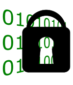

Phantom
Menu
Menu
Home
Github Page
Open Source Cade Suite
Logic Locking Algorithms
Circuit Graph - Python Documentation
Logic Locking Algorithms
Full Lock
Mux-based Full-Lock
NB2-MO-HSC LUT-lock
Mux Lock
Randome Lut Lock
SFLL-Flex
SFLL-HD
Truly Random Logic Locking
TTLock-Sen
Random XOR Lock
.